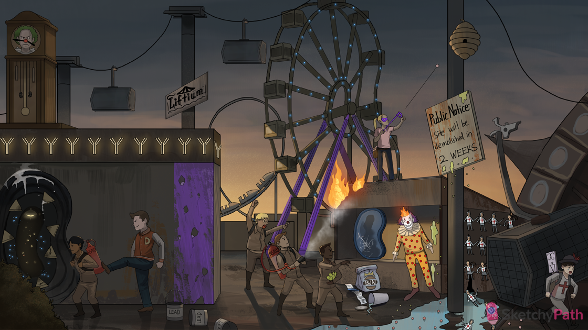

Flaming kidney: tubulointerstitial nephritis (e.g. acute interstitial nephritis - AIN) is associated with acute renal interstitial inflammation
Anti-inflammatory fire extinguisher: NSAIDs can precipitate acute interstitial nephritis (AIN)
Furious kid under the loop de loop: furosemide (a loop diuretic) can precipitate AIN
Pencils in kidney: penicillin can precipitate AIN
Stinky sulfur eggs: sulfonamide drugs (e.g. TMP/SMX) can precipitate AIN
Degranulating bee hive: drug-induced interstitial nephritis can be mediated by a type I hypersensitivity reaction (cross-linking Ig-E on mast cells → release of proinflammatory substances)
Helper squire running by cage: drug-induced interstitial nephritis can be mediated by a type IV (“delayed-type”) hypersensitivity reaction (antigen presenting cells activate TH2 helper T-cells)
Blue lights dotting kidney: AIN shows interstitial edema with a diffuse inflammatory infiltrate on histology
Slingshot with pink granules: AIN can cause eosinophilia
Eo-slingshot granules in puddle: AIN can cause eosinophiluria
White knights, squires, and archers in puddle: AIN can present with white blood cell casts
BUN bag and credit card: AIN can present with elevated serum BUN and creatinine)
Trickling water: AIN can present with oliguria
Cracked kidney mirror: AIN causes intrinsic AKI (elevated serum BUN and creatinine and numerous metabolic and hemodynamic derangements)
Flaming head: AIN can present with fever
Spotted clown outfit: AIN can present with rash
Delayed demolition: AIN symptoms occur 1-2 weeks after inciting agent (type IV hypersensitivity reaction)
Chronic grandfather clock: chronic tubulointerstitial nephritis (TIN) (e.g. analgesic nephropathy)
Anti-inflammatory fire extinguisher: chronic NSAID use can cause analgesic nephropathy (chronic TIN)
Kicking in the BACK: Chronic pain patients (e.g. BACK pain, migraines) are at risk for chronic TIN due to chronic NSAID use
Pointy pyramids in renal tunnel: NSAIDs accumulate at the renal papillae (the tips of medullary pyramids)
Oxidizing sparks: NSAIDs cause injury to the renal interstitium via free radical damage
Patchy blue sparks: → NSAIDs cause patchy inflammation in the renal interstitium
Calcium deposits: NSAIDs cause calcification in renal papillae (in areas of chronic inflammation)
Fibrotic bush: chronic inflammation in analgesic nephropathy causes interstitial fibrosis
Decaying pyramids in renal tunnel: in analgesic nephropathy causes microvascular damage AND vasoconstriction of afferent renal vessels → ischemia → renal papillary necrosis
Shrunken kidney pendulums: chronic TIN causes chronic kidney disease → bilaterally small scarred kidneys
Lead paint cans: chronic lead exposure can cause chronic TIN (i.e. lead nephropathy)
“Liftium”: chronic lithium use can cause chronic TIN
Antibody lights: autoimmune diseases (e.g. Sjögren syndrome, lupus) can cause chronic TIN